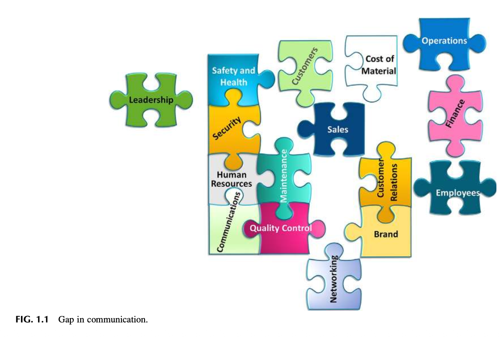
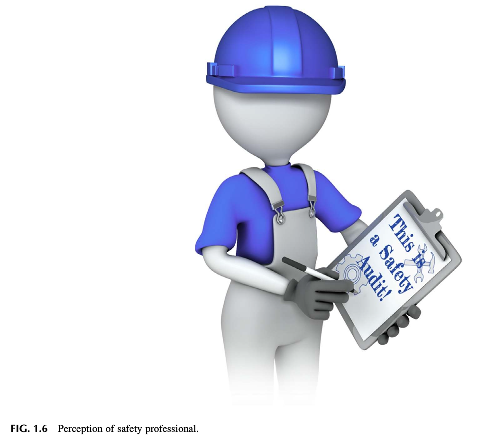
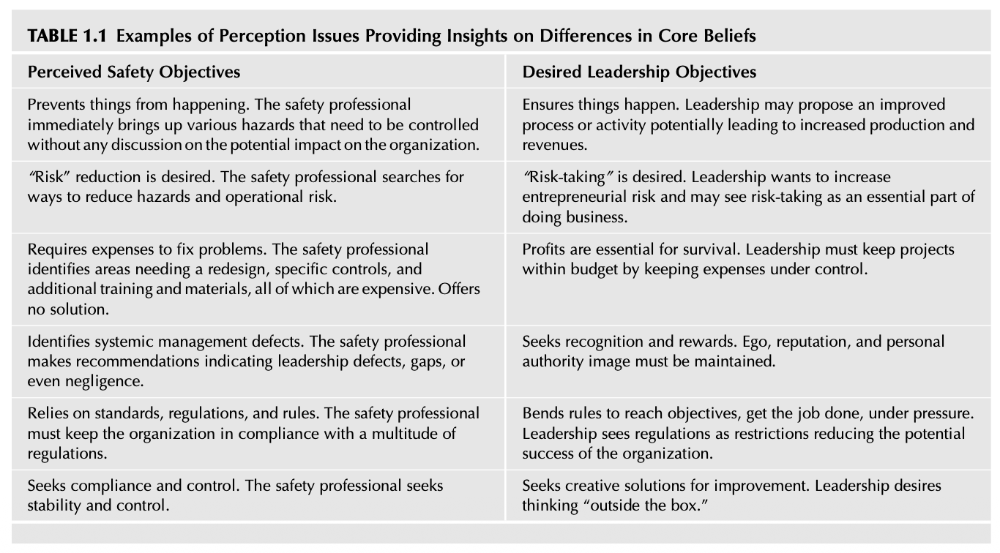
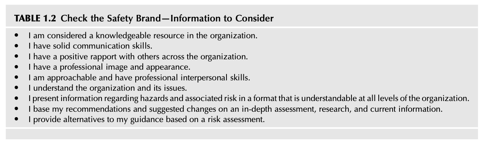
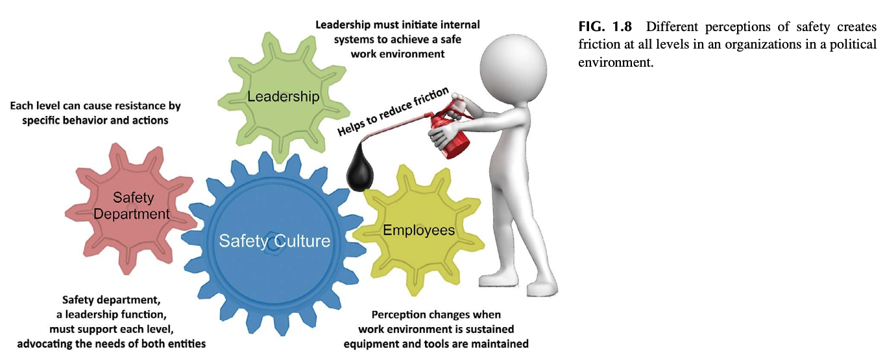
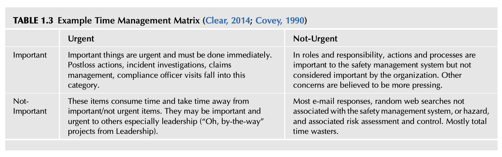
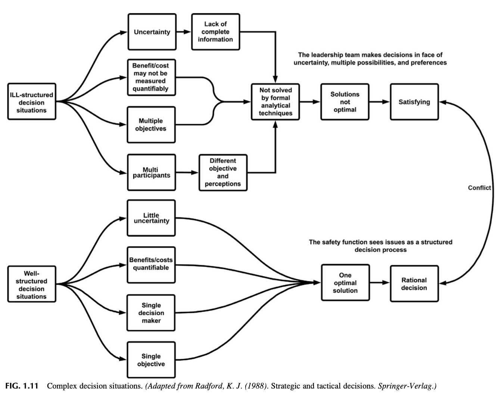
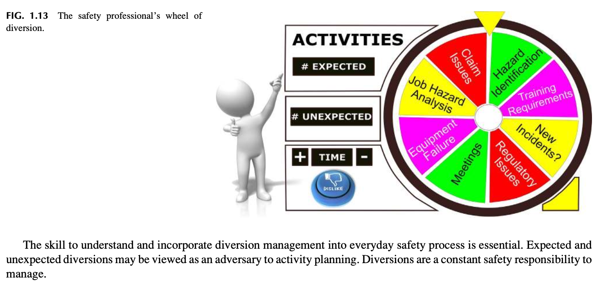

Chapter 1 Defining the Perception of Safety
📌 1. INTRODUCTION (도입)
조직의 안전문화(Safety Culture)를 확립하고 유지하기 위해서는 안전한 작업 환경의 잠재력을 높이는 다학제적 접근(Multidiscipline Approach)이 요구됩니다. 리더십은 달성해야 할 과업에 대한 명확한 비전을 제시하고, 공통 목표에 집중함으로써 안전에 대한 지각(Perception of Safety)을 견인할 수 있습니다.
1.1 안전문화 구축을 위한 실행 활동 스펙트럼
- 안전경영시스템(SMS, Safety Management System)의 선정 및 적용
- 인적 오류 성과(Human Error Performance)의 정밀 측정 및 분석
- 다계층 소통(Multilevel Communication) 체계의 지속적 개선
- 유해위험요인(Hazard) 및 손실(Loss) 분석, 종합적 리스크 평가(Risk Analysis)
- 법적 규제 및 규정 준수(Regulatory Compliance) 모니터링
1.2 안전 브랜드(Safety Brand)와 4대 학습 목표
경영 리더십 팀과 현장 직원 모두가 안전이 무엇을 수반하는지에 대해 긍정적인 지각을 가질 때 비로소 안전문화가 지속됩니다. 안전은 조직 내에서 고유한 '브랜드(Brand)'를 가지며, 이 브랜드가 어떻게 인식되고 도전받는지가 안전문화 개선의 핵심입니다.
🎯 목표 1: 실무적 작동 정의
자신과 조직에 맞는 '안전(Safety)'의 작동 정의(Personal working definition)를 수립한다.
🎯 목표 2: 지각의 중요성 규명
지각(Perception)이 안전문화의 성패를 가르는 핵심 요인임을 논의한다.
🎯 목표 3: 조직 내 지각 영향 식별
현재 조직 내에서 안전이 어떻게 지각되고 있으며 조직 전체에 미치는 파급 효과를 식별한다.
🎯 목표 4: 공통 지각과 형성 원인
안전에 대한 보편적 통념과 그러한 인식을 형성하게 만든 근본 원인을 파악한다.
🔍 [Observation 1] 동적 조직과 전통적 안전의 충돌
조직은 정적(Static)이지 않으며 항상 유동적이고 변화(Flux and change)합니다. 반대로 전통적 안전 프로세스는 불변의 안정성(Stability)을 지향하며 변하지 않는 규칙을 세우려 합니다. 그 결과, 안전은 '개선과 성공의 조력자(Advocate for improvement)'가 아니라 '변화의 반대자(Opponent of change)'로 인식되어, 안전 전문가와 경영진 간의 적대적 관계(Adversarial relationship)를 초래합니다.
"규칙만 따르면 안전하다"는 편협한 통념: 안전 규칙이 사람을 안전하게 만드는 것이 아니라, "규칙을 준수하는 실제 행동(the act of following the rules)이 사건의 리스크를 줄이는 것"입니다 (Potter, 2018).
"물고기 한 마리를 주면 하루를 먹여 살리지만, 물고기 잡는 법을 가르쳐주면 평생을 먹여 살린다."
안전 전문가는 단순한 '안전 정보 제공자(Information Resource)'에서 안전경영시스템을 능동적으로 배포하는 '전략적 플레이어(Strategic Player)'로 전환되어야 합니다.
'무손실 무위험(No Loss No Risk)' 멘탈 모델의 오류: 재해율 통계치가 낮다고 해서 위험이 없는 것이 아닙니다. 과거 손실 통계에만 의존하는 사후적 방식을 벗어나, ANSI Z10-2012가 권고하는 리스크 기반 접근법(Risk-based approach)을 도입해야 합니다.
멘탈 모델 (Koch, 2007): "우리 주변 세상에서 들어오는 정보를 단순화하고 구조화하는 지적 구조(Intellectual structures)이며, 우리의 사고와 의사결정을 지지한다."
📖 2. DEFINING SAFETY (안전의 정의)
조직 구성원 모두가 '안전'의 의미를 정확히 알고 있을 것이라는 생각은 착각입니다. 모호하고 추상적인 정의는 안전문화 개선을 저해합니다.
| 구분 | 정의 내용 | 한계 및 실무적 의미 |
|---|---|---|
| 일반 사전적 정의 (Safety, 2018) | 안전한 상태의 특성; 위험이나 부상 리스크로부터의 자유. 해를 입지 않는 상태. | 순환 참조(Circular definition)에 불과하며, '보면 안다'는 식의 직관에 의존하여 통찰력이 없음. |
| 원문 제안 정의 (Safety, 2018) | 고의적이든 사고에 의해서든 인명과 재산에 가해지는 위험, 리스크, 위해의 위협, 부상 또는 손실로부터의 상대적 자유(Relative freedom). | 절대적 무위험이 아닌 '상대적 자유'의 개념을 도입하여 현실적 통제 가능성을 열어둠. |
| ANSI/ASSE Z590.3 (PtD, 2011) | "수용 불가능한 위험으로부터의 자유 (Freedom from unacceptable risk)" |
• Risk: 위험 사건 발생 확률 추정치 • Hazard: 피해를 초래할 잠재성(Potential for harm) |
아무리 강도 높은 위험 통제 조치를 취하더라도 특정 직무에는 본질적인 위험이 잔존합니다. 소방관, 경찰관, 우주비행사, 군인, 광산/석유화학 작업자 등은 사회적 목적을 달성하기 위해 위험이 사회적으로 수용됩니다. 그러나 위험이 수용 가능하다고 해서 통제 노력을 소홀히 해도 된다는 뜻이 아니며, 가능한 모든 방호 장치와 절차를 마련해야 합니다.
🔬 [Observation 2] 몬탄테의 안전 정의와 'Safety First' 비판
윌리엄 W. 라우런스(Lowrance, 1976 『Of Acceptable Risk』): "어떤 대상은 그 리스크가 '수용 가능(Acceptable)'하다고 판단될 때 비로소 안전하다."
"안전이란 리스크와 그로부터 파생된 유해위험요인이 수용 가능하거나(Acceptable) 통제 하에 있다(In control)고 판단되는 존재 상태(State of being)이다."
단일 기업 내 130명의 안전 리더 조사 결과, '사고 예방', '다치지 않는 것', 'OSHA 준수', '퇴근할 때 다치지 않는 것' 등 제각각의 인식이 존재함을 확인했습니다.
"‘안전 제일(Safety first)’, ‘안전을 생각하자(Think Safety)’, ‘안전은 당신의 책임이다(Safety is your responsibility)’라는 구호를 과감히 버려라. 대신 각 조직원이 스스로 '유해위험요인 제어 관리자(Hazard Control Manager)'로서 자신과 회사가 위험을 어떻게 완벽히 제어하고 있는지 확신을 갖고 입증할 수 있는 개인적·조직적 숙달(Mastery)을 추구하라."
🧩 [그림 1.1 및 그림 1.2 상세 분석] 소통 단절 & 조직 퍼즐

• 리더십(Leadership - 녹색 퍼즐)이 조직 퍼즐 본체와 완전히 분리되어 좌측에 고립되어 있습니다.
• 우측 외곽에는 운영(Operations), 재무(Finance), 직원(Employees) 퍼즐이 바깥으로 튕겨져 나와 방치되어 있습니다.
• 안전보건, 보안, 인사, 소통, 유지보수, 품질관리, 고객, 자재비용, 영업, 고객관계, 브랜드, 네트워킹 조각들이 서로 맞물리지 못하고 커다란 틈새(Gap)가 형성되어 있습니다.
➔ 소통의 간극이 발생하면 안전 프로세스와 최고 의사결정권자, 현장 작업자가 완전히 단절되어 조직 전체가 붕괴됩니다.

• 리더십(Leadership)이 조직의 정중앙에 자리 잡아 상하좌우 모든 부서(고객, 운영, 재무, 유지보수, 직원, 보안)와 빈틈없이 결합되어 있습니다.
• 안전보건(Safety and Health)이 최상단에서 보안 및 고객과 직결되어 전체 운영 시스템의 든든한 초석을 형성합니다.
➔ 품질 높은 제품과 서비스를 생산하고 안전문화를 정착시키기 위해서는 소통을 매개로 모든 조직 요소가 결합되어야 합니다.
🌱 3. SAFETY AS AN EMERGENT PROPERTY (발현적 속성으로서의 안전)
저자들은 안전을 개별적인 독립 프로그램이 아니라, 조직 전체 문화 속에서 새롭게 솟아나는 '발현적 속성(Emergent Property)'으로 규정합니다.
"구성 요소들이 상호 제약적 관계(Constraining relations) 속에서 결합하여 상위 수준의 복합 객체를 구성할 때 새롭게 '출현(Emerge)'하는 독특한 속성이며, 단순 구성 요소들의 결합으로부터 예측 불가능하게 발생하는 새로운 특성."
조직 구성원들이 어떻게 행동하고, 협력하며, 무엇을 믿고 소통하는지에 따라 '안전한 환경'이 발현될 수도 있고, 반대로 '불안전한 환경'이 발현될 수도 있습니다.
⚙️ [그림 1.3 상세 분석] 웬델 프렌치 & 세실 벨(French & Bell, 1984)의 6대 연동 영역 모델
조직 개발(OD)의 고전 명저에서 제시된 모델로, 조직 개선을 이루는 6대 영역은 서로 맞물려 순환합니다:
flowchart TD
ENV["1. 환경 (Environment)
외부 법규·시장 경쟁·사회적 기대"] <--> STR["2. 구조 (Structure)
조직도·공식 보고체계·권한 배분"]
STR <--> TSK["3. 과업 (Task)
공정 단계·직무 절차·세부 과업"]
TSK <--> TECH["4. 기술 (Technology)
생산 설비·기계·IT 시스템·공구"]
TECH <--> SOC["5. 인간-사회적 요소 (Human-Social)
가치관·규범·대인관계·신뢰"]
SOC <--> GOL["6. 목표 (Goals)
조직 비전·경영 방침·전략 목표"]
GOL <--> ENV
style ENV fill:#1e293b,stroke:#38bdf8,stroke-width:2px;
style STR fill:#1e293b,stroke:#38bdf8,stroke-width:2px;
style TSK fill:#1e293b,stroke:#38bdf8,stroke-width:2px;
style TECH fill:#1e293b,stroke:#38bdf8,stroke-width:2px;
style SOC fill:#1e293b,stroke:#38bdf8,stroke-width:2px;
style GOL fill:#1e293b,stroke:#38bdf8,stroke-width:2px;
이 6대 영역 중 어느 하나라도 정렬이 어긋나거나 관계가 단절되고 여기에 내재된 유해위험요인이 결합하면 치명적인 간극(Gap)이 형성되어 대형 사고 발생 확률이 급증합니다. 안전 전문가는 단순 프로그램 관리를 넘어, 조직 전체의 강약점을 진단하고 고유 위험을 '수용 가능한 제어 상태'로 유지하는 시스템 설계자로 거듭나야 합니다.
🎯 4. THE PERCEPTION OF SAFETY (안전 지각)
경영진의 의사결정은 조직 내외부에서 끊임없이 쏟아지는 데이터 스트림에 기반합니다. 안전경영시스템의 핵심 데이터가 이 의사결정 스트림에 반드시 유입되어야 합니다. 지각(Perception)이란 "인간이 주변 환경의 정보를 선택(Select), 조직화(Organize), 해석(Interpret), 검색(Retrieve), 반응(Respond)하는 인지적 과정"입니다 (Schermerhorn et al., 2004).

• 거대한 리더십 인물이 돋보기를 들고 하단의 수많은 부서 인물들을 바라보고 있습니다.
• 경쟁 부서들: 영업 및 마케팅, 인사(HR), 보안, 품질관리, 정부 규제, 재무, 운영, 안전보건(Safety and Health), 지역사회, 고객, 이사회, 혁신, 물류.
➔ 모든 부서가 자신의 요구가 최우선이라고 확신합니다. 안전 전문가는 데이터와 의사결정의 소용돌이 속에서 비즈니스 언어로 리더십의 주의를 이끌어내야 합니다.
🎱 [Observation 3 & FIG. 1.5] 에잇볼 뒤의 고립
"모든 안전 활동은 안전 관리자의 책임"이라는 잘못된 인식이 만연합니다. 직무기술서에는 방대한 실무 요건만 적혀 있을 뿐 권한(Authority)과 리더십 역할이 결여되어 있습니다. 안전이 발현적 속성이라면 단 한 사람이 모든 안전문화를 책임질 수는 없습니다.
• 저자 제임스는 신임 안전 관리자로 승진하여 아무런 지침 없이 "알아서 해결하라(Figure it out)"는 통보를 받은 동료의 고충을 접했습니다.
• 당구 경기에서 목적구를 칠 수 없게 8번 공 뒤에 가로막힌 절망적인 상황(In a bad situation, in a losing position)을 뜻합니다.
➔ 권한과 리더십 지침 없이 책임만 떠안은 안전 관리자의 구조적 고립무원을 상징합니다.
👷 5. HOW IS THE SAFETY PROFESSIONAL PERCEIVED IN AN ORGANIZATION? (안전 전문가는 조직에서 어떻게 지각되는가?)

• 파란 안전모와 멜빵 작업복을 입은 캐릭터가 "This is a Safety Audit! (이것은 안전 감사다!)"라고 적힌 클립보드를 들고 있습니다.
• 현장을 돌며 지적질을 하고, 규정을 외우며, 오로지 개인보호구(PPE) 착용만 강요하는 감시자로 각인되어 있습니다.
➔ 이 고정관념을 깨뜨리지 못하면 안전 전문가는 영원히 조직 내에서 적대적(Adversarial) 위치에 머물며 전략적 파트너로 인정받지 못합니다.
🗣️ [Observation 4] 경영진과의 언어 불일치
"기업에서 쉽게 따를 수 있는 안전 알고리즘이 있습니까? 우리가 관리하는 고객사의 안전 관리자들이 고위 임원으로 승진했을 때 문제가 생깁니다. 그들은 다른 경영진들과 같은 언어(Business Language)를 쓰지 못합니다. 최고경영진이 우리에게 묻습니다. '도대체 저 사람들이 무슨 말을 하는 겁니까? 우리는 그들이 하는 말을 전혀 이해할 수 없습니다!'”
안전 전문가는 안전 규정의 언어에만 갇혀 있지 말고, 경영진이 사용하는 비즈니스 언어(수익성, 리스크, 생산성, 가치 창출)를 체득해야 합니다.
👔 6. PERCEPTION COMES FIRST (지각이 최우선이다)
방에 들어서는 순간 풍기는 전문적 이미지(Professional Image)는 제시하는 아이디어의 수용도를 결정합니다.
"이그제큐티브 프리젠스는 궁극적으로 성숙한 자신감(Mature self-confidence)을 보여주는 능력이다. 어렵고 예측 불가능한 상황을 통제하고, 적시에 결단을 내리며, 경영진의 재능 있고 고집 센 임원들과 당당히 어깨를 나란히 할 수 있는 역량이다."
⚖️ [표 1.1 상세 분석] 안전 목표와 리더십 목표 간의 핵심 신념 차이
안전 부서와 경영진 간의 갈등은 서로가 추구하는 핵심 목표와 신념의 차이에서 기인합니다:

| 번호 | 안전 측면에서 지각된 목표 (Perceived Safety Objectives) | 경영진이 지향하는 실제 목표 (Desired Leadership Objectives) |
|---|---|---|
| 1 | 사건 발생을 사전에 방지(Prevents)한다. 조직에 미칠 파급효과는 고려하지 않고 통제해야 할 유해요소만 즉시 꺼내 든다. |
일이 되게끔 만든다(Ensures things happen). 생산성과 매출을 증대시킬 수 있는 개선된 공정과 활동을 추진하고자 한다. |
| 2 | '리스크 감축(Risk Reduction)'을 갈망한다. 유해위험요인과 운영상의 리스크를 줄일 방법만 모색한다. |
'위험 감수(Risk-Taking)'를 원한다. 기업가적 리스크를 감수하며, 위험 감수를 사업 수행의 본질로 인식한다. |
| 3 | 문제 해결을 위해 비용 지출(Expenses)을 요구한다. 재설계, 방호장치, 추가 교육 등 비용만 요구하고 대안을 주지 않는다. |
생존을 위해 수익성(Profits) 확보가 절대적이다. 비용을 엄격히 통제하여 프로젝트가 예산 범위 내에 머물게 해야 한다. |
| 4 | 체계적인 관리 결함(Management Defects)을 지적한다. 경영진의 과실이나 결손을 부각하는 권고사항을 남발한다. |
인정과 보상(Recognition and Rewards)을 원한다. 자신의 명성과 권위, 대외적 이미지를 인정받고자 한다. |
| 5 | 표준, 법적 규정, 사내 규칙에만 전적으로 의존한다. 수많은 법적 규제에 조직을 억지로 끼워 맞추려고만 한다. |
목표 달성을 위해 규칙을 유연하게 조정(Bends rules)한다. 규제를 조직의 잠재적 성공을 저해하는 제약으로 여긴다. |
| 6 | 규정 준수(Compliance)와 안정적 통제(Control)를 추구한다. 현상의 안정성과 엄격한 통제만을 고수한다. |
개선을 위한 창의적 해결책(Creative solutions)을 원한다. 틀에서 벗어난 사고(Outside the box)와 혁신을 갈망한다. |
🌉 7. PERSONAL BRANDING (퍼스널 브랜딩)
세스 고딘 (Seth Godin, 2009): "브랜드란 소비자가 특정 제품이나 서비스를 선택하게 만드는 기대치, 기억, 스토리, 관계의 총체이다. 소비자가 프리미엄을 지불하지 않는다면 브랜드 가치는 없다."


| 번호 | 안전 브랜드 자가 진단 질문 | 실무적 확인 포인트 |
|---|---|---|
| 1 | 조직 내에서 지식 자원(Knowledgeable resource)으로 인정받는가? | 신뢰받는 전문 지식 허브 역할 수행 여부 |
| 2 | 탄탄한 의사소통 역량(Solid communication skills)을 갖추었는가? | 명료하고 설득력 있는 보고 및 발표 능력 |
| 3 | 전사적으로 긍정적인 라포(Positive rapport)를 형성하고 있는가? | 타 부서 및 현장과의 유대감과 신뢰도 |
| 4 | 프로다운 외모와 단정한 이미지(Professional image)를 갖추었는가? | 리더십에 걸맞은 단정한 비즈니스 외양 |
| 5 | 다가가기 쉽고(Approachable) 성숙한 대인관계 기술을 발휘하는가? | 직원들이 마음을 열고 안전을 의논할 수 있는 태도 |
| 6 | 조직의 전체 비즈니스와 현안 이슈(Issues)를 깊이 이해하는가? | 회사 경영 목표 및 생산 흐름 파악 여부 |
| 7 | 위험 정보를 모든 계층이 이해할 수 있는 포맷으로 제시하는가? | 현장용/경영진용 맞춤형 정보 변환 능력 |
| 8 | 권고사항이 심층 조사, 연구, 최신 데이터에 근거하는가? | 객관적 데이터 기반의 신뢰성 높은 제안 |
| 9 | 리스크 평가에 근거하여 복수의 실행 대안(Alternatives)을 제시하는가? | 일방적 금지가 아닌 합리적 선택지 제공 |
🦸 [Observation 5] 슈퍼맨 복장의 비극
신임 안전 관리자 부임 첫날, 직원이 물었습니다. "전임 관리자는 안전 행사 때마다 슈퍼맨 슈트를 입었습니다. 어떤 옷을 입으실 건가요?" 저자의 답변은 단호했습니다: "아무것도 안 입습니다(NONE!)"
전시성 이벤트나 희화화된 퍼포먼스는 안전 관리자의 전문성을 파괴하며, 경영진이 안전을 진지한 경영 파트너로 대우하지 못하게 만듭니다.
⚙️ 8. ORGANIZATIONAL FRICTION? (조직 내 마찰)
조직 마찰이란 "서로 다른 철학과 우선순위로 인해 사람들 사이에 발생하는 불화나 갈등"입니다 (Friction, 2018).

• 3대 구동 기어: 리더십(녹색 기어), 안전 부서(분홍색 기어), 현장 직원(노란색 기어)이 중앙의 거대한 안전문화(파란색 기어)를 구동합니다.
• 각 계층의 상이한 행동과 인식은 저항과 마찰을 초래합니다.
• 우측 캐릭터가 주유기(Oil can)로 기름을 치고 있습니다: "마찰을 줄이는 데 도움을 준다 (Helps to reduce friction)".
➔ 리더십의 전폭적 지원과 상호 소통이 바로 조직의 마찰을 없애는 절대적인 윤활유입니다.
🧠 9. WHAT IS THE ORGANIZATION’S MENTAL MODEL FOR SAFETY? (안전에 대한 조직의 멘탈 모델은 무엇인가?)
피터 센게(Peter Senge, 2006): "멘탈 모델이란 우리 자신, 타인, 조직에 대해 머릿속에 품고 있는 이미지와 가정, 스토리들이다."
기업 보안(Security)을 겸임하던 본사 안전 부서 요원들이 도난 사건 조사를 위해 공장을 방문하여 직원들에게 거짓말 탐지기 심문을 벌이고 거짓말한 직원을 해고했습니다. 며칠 뒤 같은 요원들이 공장을 다시 찾아와 "개선할 안전 사항에 대해 솔직한 의견을 달라"고 요청했습니다. 결과: 직원 중 누구도 입을 열지 않았습니다. 신뢰가 무너진 멘탈 모델 속에서는 안전 소통이 불가능합니다.
🏛️ 10. SAFETY, A MULTIDISCIPLINARY PROFESSION (다학제적 전문 직무로서의 안전)

• 최고 컨트롤 타워: Safety Management (Role, Department)
• 대외 협력: 외부 기관 및 정부 연락 담당 (Liaison to Departments, Agencies)
• 대내 협력: 최고경영진 연락 담당 (Liaison to Leadership)
• 4대 기능 분과:
1) 운영 1 (집행/위험관리): 법적 책무, OHS 리스크 관리, 미디어/소통, 보고 및 분석, 사회적 네트워크 유지
2) 운영 2 (전략/비전): 안전문화 비전 및 활동, 전략 목표(Goals), 세부 과업(Objectives)
3) 군수/물류 (Logistics): 보호구 장비, 안전 자재, 도서관/정보 큐레이션, HW/SW 시스템
4) 재무/행정 (Finance Administration): 안전 예산, 인사 관리, 전문가 역량 개발
💡 11. LESSON LEARNED 1 (교훈 1: 채용 시장에서의 키워드 매칭 전략)
과거의 구직 활동은 매우 어려웠으며, 오늘날에도 이력서 정보가 어떻게 선별·처리되는지 그 방식으로 인해 여전히 까다로운 도전 과제입니다.
오늘날 인터넷과 소셜 미디어(LinkedIn 등)의 발달로 채용 프로세스가 간소화되었지만, 기업의 지원자 추적 시스템(ATS)은 웹사이트나 제품을 검색할 때와 마찬가지로 알고리즘 기반의 키워드 검색(Keyword Search) 방식으로 작동합니다.
이력서 내에 직무 공고(Job Posting)와 정확히 일치하는 핵심 전문 키워드의 빈도와 적합성을 전략적으로 높여야만 검색 알고리즘에 필터링되지 않고 채용 담당자의 눈에 띌 수 있는 가시성(Visibility)과 인터뷰 성사 확률을 극대화할 수 있습니다 (제16장 부록 16.2 소셜 미디어 도구 활용법 연계).
📋 12. LESSON LEARNED 2 (교훈 2: 직무 갭 분석 양식과 SWOT 매트릭스 활용)
직무기술서(Job Description)를 검토한 후 실제 지원서를 제출할 때는, 면접 후보자 매칭에 사용될 구체적 키워드가 포함된 '직무 갭 분석 및 상호작용 양식(Job Gap Analysis and Interaction Form)'을 적극 활용해야 합니다.
📊 직무 갭 분석 (Gap Analysis)
자신의 현재 보유 역량과 회사의 직무 요구조건 간의 간극(Gap)을 객관적으로 대조하여 보강 계획을 수립합니다 (부록 1.2 참조).
🎯 SWOT 매트릭스 결합
강점(S), 약점(W), 기회(O), 위협(T)을 교차 분석하여 서류 전형 및 심층 면접에서 차별화된 합격 전략을 도출합니다 (제6장 부록 6.5 연계).
⏱️ 13. USING A TIME MANAGEMENT MATRIX (시간 관리 매트릭스의 활용)
드와이트 D. 아이젠하워: "중요한 것은 거의 긴급하지 않고, 긴급한 것은 거의 중요하지 않다."
자잘한 잡무에 치여 큰 목표를 잃어버리는 '활동의 덫(Activity Trap)'을 경계해야 합니다.


• 제1분면 (긴급함 & 중요함 - DO / 즉시 실행, 붉은색): 사고 수습, 중대재해 조사, 노동청 불시 감독 대응.
• ★ 제2분면 (긴급하지 않음 & 중요함 - DECIDE / 계획 및 결정, 회색): 위험성평가(JHA), 비상대응계획, 안전문화 장기 전략. 장기적 성취는 오직 이 2분면에서 발생합니다!
• 제3분면 (긴급함 & 중요하지 않음 - DELEGATE / 타인 위임): 리더십의 돌발 잡무, 시간 때우기 회의.
• 제4분면 (긴급하지도 않고 중요하지도 않음 - DELETE / 폐기, 노란색): 무의미한 웹서핑, 잡담 이메일.
🏭 [Observation 7] 오버헤드 컨베이어 부상 해결과 부서 간 협업
5개 생산 라인에 부품을 공급하는 오버헤드 컨베이어에서 부품을 내리던 작업자들의 지속적인 어깨 부상 발생. 조사 결과 산업공학(IE) 기술자들이 라인 변경 때마다 컨베이어 동기화를 위해 1주일간 수작업으로 유색 태그를 붙이고 있었습니다. 안전 관리자, IE 기술자, 프로그래머가 협업하여 컴퓨터 기반 동기화 자동화 프로그램을 개발. ➔ 어깨 부상을 완전히 근절했을 뿐만 아니라 라인 전환 시간을 대폭 단축시켜 생산성을 극대화함! 안전에 대한 전사적 인식을 혁신한 대표 사례.
🔀 14. SAFETY AT A CROSSROAD (기로에 선 안전)
안전 관리는 조직 내 모든 활동이 교차하는 교차로(Crossroad)에 위치합니다. 안전 전문가의 궁극적 목표는 경영진과 전 직원으로부터 '신뢰받고 지식을 갖춘 해결사(Trusted, knowledgeable go-to person)'로 인정받는 것입니다.
- 리더십 및 조직 모든 계층에서 제기되는 안전 문제를 적극적으로 해결한다.
- 안전 관련 입장과 결론을 뒷받침하는 전문 정보를 큐레이션(Curation)하고 활용한다 (제15장 연계).
- 전 계층과 긍정적인 소통 채널을 유지하며, 긴급 위험 정보는 공식 채널을 단축하여 전달한다.
- 실제적·인식적 유해위험요인과 관련 리스크를 철저히 분석한다.
- 안전경영시스템 권고사항을 실행에 옮길 수 있는 전문적 영향력(Professional influence)을 발휘한다.
🏛️ 사내 정치(Internal Politics)의 이해와 자원 배분 경쟁
조직 내 안전문화를 바꾸기 위해서는 사내 정치와 대인관계 메커니즘을 외면해서는 안 됩니다. 정치(Politics)란 경쟁하는 이익 집단이나 개인들 간의 권력 및 리더십 획득을 둘러싼 경쟁입니다. 마케팅, 생산, 재무 부서가 경영진의 한정된 자원과 주의(Attention)를 두고 경쟁하듯, 안전 부서 역시 안전이 조직에 실질적 부가가치(Value-added)를 창출함을 입증해야 합니다.
⚖️ [그림 1.11 상세 분석] 래드포드(Radford, 1988)의 의사결정 모델: 리더십과 안전 부서의 갈등 기제

flowchart TD
subgraph Upper ["경영 리더십 (비구조화된 상황: ILL-Structured Decision Situations)"]
U1["불확실성 상존"] --> U2["불완전한 정보"]
U3["비용/편익 정량화 불가"] --> U5["공식 분석 기법으로 풀 수 없음"]
U4["다중 목표 추구"] --> U5
U6["다양한 이해관계자"] --> U7["상이한 목표와 지각"] --> U5
U2 --> U5
U5 --> U8["최적이 아닌 솔루션"] --> U9["만족화 기준 결정 (Satisficing)"]
end
subgraph Lower ["전통적 안전 부서 (구조화된 상황: Well-Structured Decision Situations)"]
L1["낮은 불확실성"] --> L5["단일 최적해 도출"]
L2["정량화 가능한 비용/편익"] --> L5
L3["단일 의사결정권자"] --> L5
L4["단일 목표 (무사고)"] --> L5
L5 --> L6["합리적 결정 (Rational Decision)"]
end
U9 <===> |"★ 근본적 갈등 (Conflict) 발생"| L6
style U9 fill:#ef4444,color:#fff,stroke-width:2px;
style L6 fill:#38bdf8,color:#0b1120,stroke-width:2px;
경영진은 복잡한 불확실성 속에서 다자간 타협안인 '만족화(Satisficing)'를 모색하는데, 안전 부서가 단일 규정을 근거로 "규정 X를 지키면 사고 Y가 없다"는 '단일 최적해'만을 강요하거나 "예산을 주지 않으면 노동청 처벌을 받는다"는 규제 위협만 가할 때 회복 불가능한 갈등이 발생합니다.
🗣️ 15. DO SAFETY AND LEADERSHIP SPEAK THE SAME LANGUAGE? (안전과 리더십은 같은 언어로 말하는가?)
안전 전문가는 현장의 위험을 기술적 용어나 단순 규제 조항으로만 설명하지 않고, 경영진이 이해할 수 있는 '비즈니스 언어(Business Language)'로 번역하여 소통해야 합니다.
📊 [표 1.4 상세 분석] 조직의 안전 지각을 파악하기 위한 정보 출처

| 정보 출처 | 확인할 수 있는 안전문화 및 지각 관련 통찰 |
|---|---|
| 연차보고서 (Annual Reports) | 조직의 재무 건전성 및 주요 경영 추진 실적 파악 |
| 미션 선언문 (Mission Statements) | 조직의 공식 표명 가치(Espoused Values)와 실제 현장 현실 간의 괴리(Gap) 측정 |
| 직무 승진 기준 (Job Promotions) | 승진 결정 기준을 통해 안전 중시 인재가 우대받는지 파악 |
| 발표 자료 및 회의 안건 | 안전 안건 포함 여부, 사후 손실 보고 위주인지 위험성평가 중심인지, 안전 관리자의 회의 참석 여부 |
| 업계 전문지 및 협회 동향 | 산업 내 조직 위상, 시장 트렌드, 산업별 안전 동향 파악 |
| 사내 뉴스레터 및 미디어 | 사내 소통 스타일과 전달되는 메시지의 실제 우선순위 |
| 조직도 (Organizational Charts) | 공식 보고 라인에서 안전 부서가 위치한 계층적 위상과 영향력 |
| 목표 및 계획 수립 방식 | 안전 관련 기준이 전사적 사업 목표에 실질적으로 반영되는지 여부 |
📈 16. FROM STARTUP TO STATUS QUO (스타트업에서 현상 유지까지)
조직은 고정되어 있지 않으며, 스타트업 창업기부터 성숙·현상 유지 단계에 이르기까지 끊임없이 변화합니다. 긍정적 지각에 기반하여 조직의 구조 깊숙이 직조된 유연한 안전경영시스템만이 거대한 환경 변화의 충격 속에서도 파괴되지 않고 회복탄력성(Resilience)을 발휘할 수 있습니다.
- 리더십의 성향, 철학 및 태도 변화 (Leadership personalities, philosophies, and attitudes)
- 노사 관계 및 대내외 소통 방식의 변화 (Employee relations and communication)
- 운영 방식 변화에 따른 유해위험요인 및 리스크의 변화 (Risk and hazards through operational change)
- 일상적 루틴을 뒤흔드는 위기 상황 발생 (직장 내 폭력, 화재, 중대재해, 자연재해 등)
- 법적·제도적 교육훈련 요구 증대 (Increased training demands)
- 기업 인수합병(M&A) 및 조직 통폐합
- 경영진의 부실한 계획 수립 및 의사결정 오류 (Poor planning and decision making)
- 기술 혁신 및 신기술 도입 (Technology change)
- 기타 조직에 영향을 미치는 잠재적 복합 위기 요인들
안전경영시스템은 경직된 매뉴얼에 갇혀 있어서는 안 되며, 조직의 진화 과정과 비즈니스 요구에 발맞추어 유연하고 적응력(Flexible & Adaptable) 있게 진화해야 조직문화의 생존력을 보장할 수 있습니다 (제5장 연계).
🎡 17. UNDERSTANDING AND MANAGING THE CIRCLE OF DIVERSION (방해 요소의 순환고리 이해와 관리)
디버전(Diversion)이란 "관리자들이 다른 긴급 우선순위로 인해 너무 바빠서 안전에 충분한 주의를 기울이지 못하는 현상"입니다 (Mathis, 2014).


• 예상된 계획 활동 (Expected Activities): 작업위험성평가(JHA), 위험요인 발굴, 법정 교육훈련, 정기 안전회의.
• 예상치 못한 돌발 활동 (Unexpected Activities): 보상 청구 분쟁, 설비 고장 및 결함, 신규 사고 발생, 불시 규제 점검.
➔ 디버전을 계획의 방해물로만 보지 말고 일상 업무의 본질로 수용하여 유연한 시간 관리(제2분면 보호)로 통제해야 합니다.
현장 직원이 중요한 안전 문제를 문의했을 때 사유 설명 없이 "지금 바쁘니 나중에 시간 날 때 보겠다"고 미루면, 직원은 안전이 뒷전이라는 강한 부정적 인식을 갖게 됩니다.
⚠️ [Observation 8] 직원의 안전 요청 지연이 주는 치명적 신호
현장 직원이 중요한 안전 우려 사항을 제기했을 때, 안전 관리자가 명확한 사유 설명 없이 "지금 바쁘니 나중에 시간 날 때 보겠다"고 무심코 넘겨버린다면, 직원은 안전이 조직에서 뒷전이라는 강한 부정적 신호를 받게 됩니다. 디버전을 다루는 태도 자체가 조직의 안전 지각을 형성합니다.
- 당일 수립한 안전 목표와 계획이 주변 상황에 의해 얼마나 자주 무산되는가?
- 안전 전문가 혼자만 모든 문제를 해결하느라 역량이 지나치게 분산(Spread too thin)되어 있는가?
- 경영진이 안전 전문가를 안전 시스템 본연의 목적과 무관한 잡무에 동원하고 있는가?
- 조직 내에 너무 많은 '위기'가 상존하는가? 이것이 변화에 대한 조직적 저항 때문은 아닌가?
- 디버전 현상은 조직의 안전문화에 대해 무엇을 시사하고 있는가?
- 디버전은 조직의 '안전에 대한 지각'에 어떤 영향을 미치고 있는가?
🔄 18. CHANGING THE PERCEPTION OF THE SAFETY PROFESSIONAL (안전 전문가에 대한 지각 바꾸기)
단순한 현장 단속자(Safety Guy)에서 벗어나 신뢰받는 리더로 거듭나기 위해서는 체계적인 자기 평가 인벤토리(Safety Professional Perception Inventory)를 통해 자신의 전문 브랜드를 객관적으로 점검해야 합니다.
🔍 자기 진단의 필요성
조직 내에서 단순히 '지적질하는 사람'으로 인식되고 있다면, 스스로의 행동 양식과 전문성 전달 방식을 진단하는 자기 평가 체크리스트를 실행해야 합니다.
📊 조직 안전문화와의 연계
개인 인벤토리 분석은 안전 전문가의 역할에 대해 조직이 어떤 인식을 가지고 있는지 통찰을 제공하며, 조직 전체의 안전문화를 가늠하는 척도가 됩니다.
🏷️ 전문가 브랜드 재정립
이 인벤토리는 장애물을 극복하고 조직 내에서 신뢰받는 전문 브랜드(Professional Brand)를 구축하도록 설계되었습니다 (부록 1.3 참조).
🚀 19. ORIENTATION VS. ONBOARDING (오리엔테이션 대 온보딩)
조직의 안전 지각을 근본적으로 바꾸는 출발점은 신규 입사자 및 전환 배치 직원을 맞이하는 온보딩 프로세스입니다.

| 비교 기준 | 오리엔테이션 (Orientation) | 온보딩 (Onboarding) |
|---|---|---|
| 역할 범위 | 회사 전체 차원의 일반적 역할 | 소속 부서 및 팀 단위의 구체적 실무 역할 |
| 기간 및 형태 | 1회성 단발 이벤트 (1일 ~ 2주) | 수개월에서 1년 이상 지속되는 진행형 프로세스 |
| 교육 방식 | 강의실 집체 교육 (Classroom Training) | 현장 직무 교육 (OJT) 및 실무 멘토링 |
| 진행 성격 | 전통적이고 정적인 정보 전달 | 진화하고 점진적으로 발전하는 맞춤형 방식 |
| 적용 대상 | 주로 신규 채용 직원에게만 국한 | 신규 입사자, 전환 배치자, 승진자 전체 |
| 제공 정보 | 모든 신입사원 대상 일반 규정 정보 | 개인별·직무별 맞춤형 고유 정보 |
| 지향점 | 단기 적응 및 행정 처리에 집중 | 장기적 조직 몰입, 역량 발휘, 안전문화 내재화 |
주야간 모든 교대조를 직접 찾아가 경청하십시오. ★ 절대적 수칙: 대화할 때는 수첩을 꺼내 적지 말고 상대방의 눈을 보며 전적으로 경청(Just Listen)하십시오. 대화가 끝난 후 메모를 정리해야 진솔한 신뢰를 얻을 수 있습니다.
📝 20. SUMMARY (요약 및 결론)
- 안전문화는 안전경영시스템 자체를 통째로 교체한다고 개선되는 것이 아니며, 조직 내 '안전에 대한 지각(Perception of Safety)'을 근본적으로 전환함으로써 비로소 고도화됩니다.
- 안전은 고립된 프로그램이 아니라, 조직의 6대 영역(환경, 구조, 과업, 기술, 인간-사회, 목표)이 유기적으로 맞물려 작동할 때 비로소 드러나는 '발현적 속성(Emergent Property)'입니다.
- 조직은 영구적으로 변화하는 동적 실체이므로, 안전 프로세스 역시 정적 안정성에 안주하지 말고 동적이고 회복탄력적인(Resilient) 시스템으로 스스로를 끊임없이 혁신해야 합니다.
- 리더십과의 언어적 일치(Business language)를 이루고, 2분면 중심의 시간 관리와 디버전 통제를 통해 안전 전문가의 전문적 브랜드를 확립해야 합니다.
❓ 21. CHAPTER REVIEW QUESTIONS (복습 문제 12문항 정밀 분석)
제1장에서 다룬 핵심 이론과 개념을 평가하고 현장 실무에 적용하기 위한 12대 핵심 복습 질문입니다:
복습 문제 12문항 (아코디언 클릭 시 모범 답안 확인)
Q1. 안전문화 개발·유지에 왜 다학제적 접근이 필요한가? ▼
Q2. 안전문화(Safety Culture)를 정의하라. ▼
Q3. 발현적 속성(Emergent Property)을 정의하고 안전문화와의 연관성을 설명하라. ▼
Q4. 안전에 대한 긍정적 지각의 중요성을 논하라. ▼
Q5. 서면 직무기술서의 가치를 설명하라. ▼
Q6. 지각이 왜 조직 안전문화의 핵심 지표가 되는가? ▼
Q7. 표 1.1의 지각 차이 이슈(6대 대비)를 논하라. ▼
Q8. 멘탈 모델의 개념을 설명하고 사례를 제시하라. ▼
Q9. 시간 관리 매트릭스의 4개 사분면을 식별하라. ▼
Q10. 리더십과 같은 언어로 소통하지 못할 때 발생하는 문제를 논하라. ▼
Q11. 안전 브랜드 구축의 중요성을 논하라. ▼
Q12. 디버전의 수레바퀴(Wheel of Diversion) 이해가 왜 중요한가? ▼
📁 22. [APPENDIX 1.1] EXAMPLE OF A TYPICAL SAFETY MANAGER JOB DESCRIPTION, DUTIES, AND REQUIREMENTS
공고 요약 및 주요 책무: 대규모 제조·산업 시설에서 안전보건 규정 준수를 총괄하고, 위험성평가(JHA), 사고 조사, 임직원 교육을 주도하는 관리자 직무.
- OSHA, EPA 등 법적 규제 준수 체계 수립 및 정부 기관 대응
- 작업장 유해위험요인 발굴 및 리스크 저감 대책 실행
- 사고 근본 원인 조사(RCA) 및 재발 방지 대책 수립
- 성찰 과제: 전통적 공고는 여전히 '규정 준수(Compliance)'에 치중되어 있으므로 비즈니스 파트너로서의 전략적 가치를 스스로 증명해야 합니다.
📁 23. [APPENDIX 1.2] SUGGESTED JOB GAP ANALYSIS AND INTERACTION FORM
구직 공고의 요구조건과 자신의 보유 역량을 1:1로 대조하여 부족한 간극(Gap)을 파악하고, 이를 메우기 위한 구체적 행동 계획과 SWOT 매트릭스를 수립하는 도구입니다.
| 직무 공고 요구 항목 (Job Requirement) | 본인의 현재 역량 수준 (Current Capability) | 역량 갭 (Gap Identified) | 갭 극복 전략 및 키워드 보강 계획 |
|---|---|---|---|
| ISO 45001 시스템 구축 경험 | 내부 심사원 수료 및 보조 참여 | 인증 심사 총괄 경험 부족 | 전문 심사원 과정 이수 및 모의 심사 포트폴리오 구축 |
| 전사 위험성평가(JHA) 총괄 | 정성적 평가 수행 가능 | 정량적 위험평가 툴 미숙 | 정량 위험평가 소프트웨어 교육 수료 및 키워드 추가 |
| 경영진 리스크 브리핑 역량 | 팀 내 보고 경험 다수 | 임원 대상 ROI 보고 경험 부족 | 재무적 손실 비용 분석 모델 학습 및 프레젠테이션 연습 |
📁 24. [APPENDIX 1.3] SAFETY PROFESSIONAL PERCEPTION INVENTORY, AN OPPORTUNITY
단순한 '안전 경찰'에서 '가치 창출 파트너'로 거듭나기 위한 10대 핵심 자가 진단 문항:
- 나는 조직 내에서 생산을 돕는 해결사로 지각되고 있는가?
- 경영진과 대화할 때 규제 벌금 위협 대신 비즈니스 언어와 ROI로 설득하는가?
- 현장 작업자들은 나를 감시자가 아니라 든든한 조력자로 신뢰하는가?
- 나의 하루 일과는 1분면(소방수)에 휘둘리지 않고 2분면(예방 전략)을 계획대로 방어하는가?
- 타 부서 관리자들과 정기적으로 협력 채널을 가동하고 상호 윈-윈 관계를 맺고 있는가?
- 새로운 규칙을 도입할 때 구성원들과의 의미구성(Sensemaking) 과정을 거치는가?
- 조직의 비공식 네트워크를 파악하고 긴급 정보를 신속히 전달할 수 있는가?
- 돌발 업무 발생 시 직원의 안전 요청을 가볍게 넘기지 않고 진정성 있게 피드백하는가?
- 신입 및 전환 직원에게 체계적인 온보딩 멘토링을 제공하는가?
- 나는 명확한 '퍼스널 브랜드'를 구축하고 이를 일관되게 증명하고 있는가?
📁 25. [APPENDIX 1.4] ORIENTATION VS. ONBOARDING
온보딩의 전략적 심화와 신임 안전 관리자가 조직에 안착하기 위한 첫 30일 핵심 행동 수칙입니다.
📅 첫 10일 (경청과 파악)
섣부른 지적이나 규칙 변경을 금지하고, 현장 순회(MBWA)를 통해 야간 교대조까지 목소리를 경청하며 비공식 권력 구조를 파악합니다 (수첩에 적지 말고 온전히 들을 것!).
📅 11일 ~ 20일 (관계 구축 및 갭 분석)
생산, 유지보수, 인사 부서장들과 1:1 면담을 진행하고, 회사의 과거 아차사고 및 사고 보고서를 정밀 분석하여 취약점을 도출합니다.
📅 21일 ~ 30일 (작은 성공 창출 & 로드맵)
오래 방치되었던 불편한 현장 안전 문제 하나를 신속히 해결하여 신뢰를 획득하고, 향후 1년간 추진할 '제2분면 안전 로드맵'을 보고합니다.
📚 26. BIBLIOGRAPHY (참고 문헌)
- Covey, S. R. (1990). The 7 Habits of Highly Effective People: Powerful Lessons in Personal Change. Free Press.
- FM 6-22. (2015). Leader Development. Headquarters, Department of the Army.
- French, W. L., & Bell, C. H. (1984). Organization Development: Behavioral Science Interventions for Organization Improvement (3rd ed.). Prentice-Hall.
- Lawton, R. (2014). Onboarding: The First Step in Safety. Occupational Health & Safety.
- Mathis, T. L. (2014). Overcoming Safety Diversions. EHS Today.
- Montante, W. M. (2014). Safety: An Emergent Property of a Complex System. Professional Safety, 59(12), 40-47.
- Peters, T. J., & Austin, N. (1999). A Passion for Excellence: The Leadership Difference. Profile Books.
- Radford, K. J. (1988). Strategic and Tactical Decisions: Emerging Concepts and Methods. Springer-Verlag.
- Radford, K. J. (1991). Individual and Multi-Person Decision Making. Springer-Verlag.
- Sinek, S. (2014). Leaders Eat Last: Why Some Teams Pull Together and Others Don't. Portfolio/Penguin.
- Yario, M. (2017). Building a Resilient Safety Culture in Dynamic Business Environments. Journal of Safety Management, 44(3), 112-125.